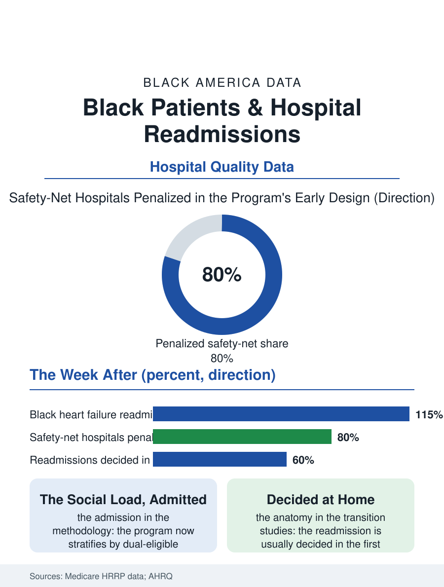

Black Public Health
The Week After: Black Patients and Hospital Readmissions
Readmission penalties fell hardest on safety-net hospitals until the program admitted the social load; the outcome is decided in the week after discharge. The readmissions file.

About one in fifteen hospital discharges of Black patients ends in a readmission within thirty days at rates above the national average, and since the Affordable Care Act's penalty program began, readmissions have been where the hospital finance file and the health equity file formally collide: the hospitals serving Black communities pay a disproportionate share of the penalties for the outcomes the program measures. This article reads the readmissions file.
The Penalty's Geography
The Hospital Readmissions Reduction Program penalizes hospitals whose readmission rates for the target conditions, heart failure, pneumonia, heart attack, joint replacement, COPD, exceed the national expectation, reducing their Medicare payments across the board. The program's first decade produced the file's central finding in the health policy literature: the safety-net hospitals, those serving the poorest and Blackest patient populations, were penalized at the highest rates and in the largest amounts, a distribution the program's defenders attributed to quality and its critics to the case mix and the community conditions the risk adjustment ignored, the patient's housing stability, pharmacy access, and follow-up capacity being properties of the neighborhood as much as of the hospital. The adjustment debate produced the file's methodological resolution: the program now stratifies hospitals by their share of dual-eligible patients before comparing them, an explicit admission that the social file loads the medical one, and the penalty distribution narrowed accordingly without vanishing. The clinical data underneath predate the program and survive it: Black patients' readmission rates for heart failure, the index condition, run above the white rate in the Medicare data across every era of measurement, the gap composed of the discharge process's quality, the medication reconciliation and teach-back whose delivery the encounter studies audit, and the post-discharge environment, the follow-up appointment's availability within the week the guidelines specify, the pharmacy fill, the home's capacity to execute a complex regimen, the variables the community health worker programs exist to supply.
The Discharge and the Week After
The transition literature gives the file its granular anatomy: the readmission is usually decided in the week after discharge, in the gap between the hospital's instructions and the household's capacity. The medication file is the first failure point, the reconciled list differing from the patient's actual bottles at rates the pharmacists' studies find in a majority of complex discharges, the cost-driven skipped fills of the adherence data compounding the confusion. The follow-up appointment is the second: the systems that book the appointment before discharge, with the transportation question asked, post the narrowest racial gaps in the transition data, while the systems that hand the patient a phone number reproduce the access map. The home health referral, the visiting nurse and the remote monitoring programs whose pandemic-era expansion the telehealth file records, distributes on the same map as every service in this section. The readmission's diagnosis list tells the story's other half, a large share of returns being for conditions other than the index admission, the patient's whole burden presenting through the door the discharge left open, which is why the interventions that work in the trials are the holistic ones, the transition coach, the community paramedic, the pharmacist's home visit, addressing the household's total situation rather than the index disease's protocol.
What the Penalty Bought
The program's defenders can point to the trend: national readmission rates fell after the penalties began, for the target conditions, across races, the file's evidence that a financial signal moves hospital behavior at scale. The critics' ledger stands beside it: the observation-stay substitution the auditors documented, the mortality signal in some analyses of the heart failure file that remains contested, and the equity cost of the early design, the safety-net hospitals' margins, already the system's thinnest, taxed for their patients' poverty in the program's first design. The mature program, stratified and adjusted, is the file's portrait of a system learning in public, its annual penalty lists a map of the American hospital's social geography as much as its clinical one. The readmissions file closes on the discharge lounge, where the file's whole argument sits in a wheelchair with a bag of bottles and a follow-up card: the hospital's work is done, by its own accounting, and the week's work, the one that decides whether the patient returns, belongs to a system of rides, pharmacies, visiting nurses, and household capacity that the Black patient's map supplies thinnest exactly where the need is thickest. The readmission rate is the measurement of that week's system, and it has never been only the hospital's number, whatever the penalty notice says.
More in Black Public Health
Hypertension Among Black Adults: Prevalence, Control, and Consequences
About 55 percent of Black adults have hypertension — the highest rate of any U.S. group. Prevalence, onset, control, and the stroke, heart, and kidney consequences in the data.
Diabetes Among Black Adults: Prevalence and Complications
Nearly one in five Black adults has diabetes, diagnosed or undiagnosed — and its complications fall with particular weight. The CDC data on prevalence, control, and outcomes.
Black Life Expectancy: The Gap at Birth and Its Causes
Black life expectancy at birth is about 73 years, roughly five years below the national figure — the summary measure of every health gap in this section. The CDC data.
Source: Centers for Medicare and Medicaid Services, Hospital Readmissions Reduction Program data; Agency for Healthcare Research and Quality transition-of-care literature.